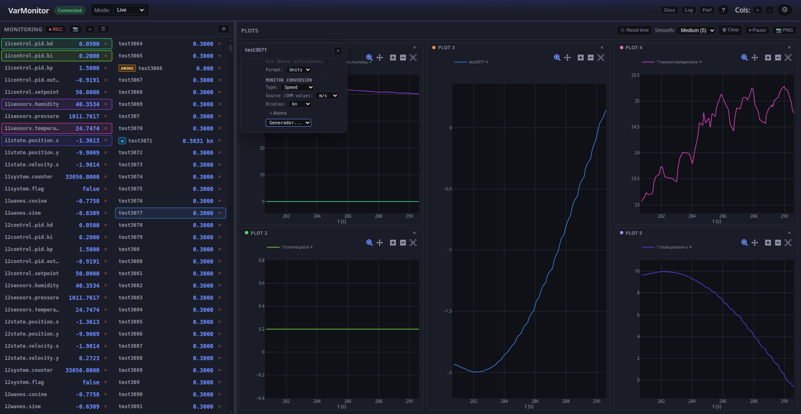
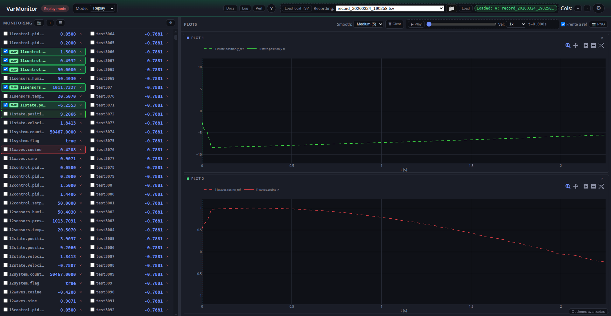
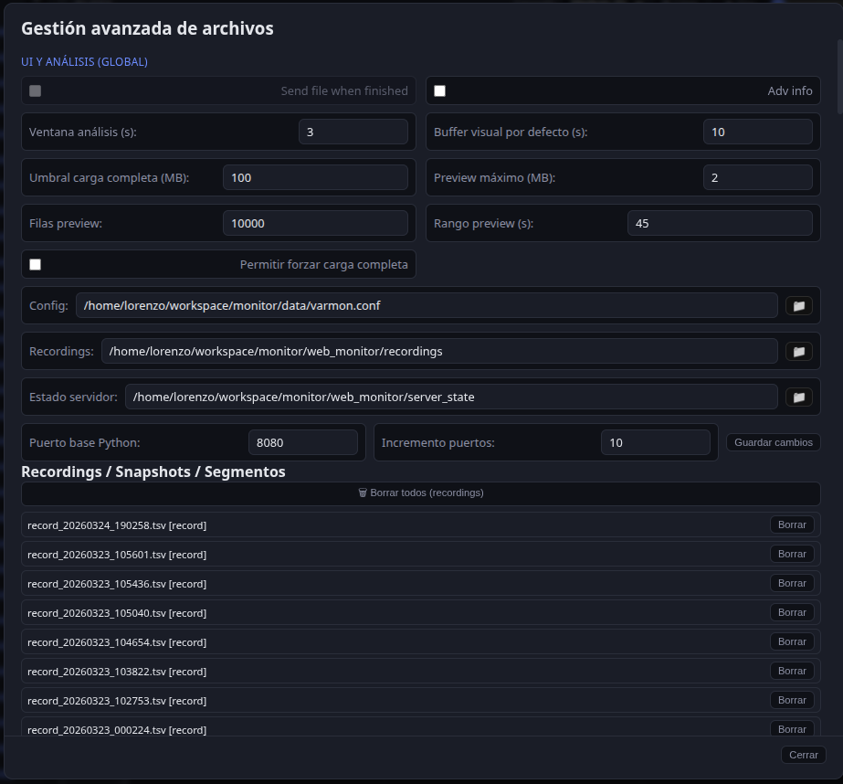

Frontend
El frontend es una SPA en web_monitor/static/: index.html, hoja de estilos y cliente modular ES (js/entry.mjs → app-legacy.mjs, módulos constants / i18n; opcionalmente bundle IIFE vía esbuild). Usa Plotly.js para los gráficos.
Vista general de la interfaz
Cabecera con estado de conexión, selector de modo (Live / Análisis / Replay / Registro ARINC), Rel act, tema e idioma; tres columnas (variables, monitor, gráficos) salvo en modo registro.


Estructura del código cliente
- Módulos ES: el punto de entrada
entry.mjsimporta la lógica principal; las constantes y traducciones viven enjs/modules/. Sin bundler, el navegador carga los.mjscontype="module". - Estado y DOM: la lógica principal mantiene el estado en el ámbito del módulo (equivalente al antiguo IIFE de un único
app.js) y manipula el DOM con callbacks; no hay framework (React/Vue). - Estado global (ámbito del módulo principal):
monitoredNames,monitoredOrder,varGraphAssignment,arrayElemAssignment,graphList,historyCache,arrayElemHistory,plotInstances,alarms,computedVars,appMode,offlineDataset, etc. - Inicialización: Tras cargar el módulo se ejecutan
loadConfig(),pruneArincDerivedFromMonitored(),applyTheme(),applyLanguage(), listeners,ResizeObserverdel área de gráficos yrebuildPlotArea().
Tres columnas
- Columna 1 (navegador de variables): Lista de variables conocidas (
knownVarNames), filtro, agrupación opcional, checkboxes para añadir a “monitor” o seleccionar para arrastrar. Drag & drop para llevar variables a la columna 2 o a un gráfico. - Columna 2 (monitor): Variables en vivo con valor actual. Orden según
monitoredOrder. Cada fila puede tener un selector para asignar la variable a un gráfico (varGraphAssignment[name] = gid). Aquí se envían al backend las variables “monitorizadas” (monitoredpor WebSocket). - Columna 3 (gráficos): Área de gráficos Plotly. Slots por gráfico (
graphList: lista de IDsg1,g2, ...). Cada slot tiene un contenedor#plotContainer_<gid>. Las variables asignadas a un gráfico vienen devarGraphAssignmentyarrayElemAssignment; la función getVarsForGraph(gid) devuelve los nombres asignados a esegid.
Flujo de datos en vivo (WebSocket)
- Al conectar, el frontend envía la lista de variables a monitorizar (
monitored) y el backend envíavars_updatecon snapshots. - El manejador del mensaje recibe el payload, actualiza
historyCacheyarrayElemHistory(histórico por variable para los gráficos), y llama a schedulePlotRender(). - schedulePlotRender(): Si no está pausado y pasa el throttle (adaptive load), encola un requestAnimationFrame que llama a renderPlots().
Gráficos: funciones clave
- rebuildPlotArea(): Purgar todos los Plotly de los contenedores existentes, vaciar el área (excepto el nodo
#plotEmpty), y para cadagidengraphListcrear un slot (cabecera + contenedor#plotContainer_<gid>). Insertar los slots antes deplotEmpty. Si hay al menos un gráfico, ocultarplotEmpty(display: none) para que el cajetín ocupe todo el alto; si no hay gráficos, mostrarplotEmpty(zona de “suelta aquí para crear gráfico”). - renderPlots(): Para cada
gidengraphList, obtener las variables del gráfico con getVarsForGraph(gid), construir las trazas desdehistoryCache/arrayElemHistory(ventana de tiempo segúntimeWindowSelect), aplicar suavizado opcional, y llamar aPlotly.newPlot(primera vez) oPlotly.react(actualizaciones). También actualiza la visibilidad deplotEmptyy las estadísticas de render. Segundo pintado tras F5: la primera vez que terminarenderPlots()congraphList.length > 0, se programa un único schedulePlotRender() a los 500 ms (__plotSecondPaintScheduled), para que cuando los datos ya hayan llegado por WebSocket se vuelvan a dibujar las curvas y no quede el cajetín vacío. - getVarsForGraph(gid): Devuelve los nombres de variables asignados al gráfico
gid: los que están enmonitoredNamesconvarGraphAssignment[name] === gid, más los devarGraphAssignmentque son derivados ARINC y apuntan agid, más los dearrayElemAssignmentque apuntan agid.
Persistencia (localStorage)
- saveConfig() / loadConfig(): Guardan y cargan en
localStorage(clavevarmon_config) la lista de variables monitorizadas,varGraphAssignment,graphList, ventana de tiempo, tema, idioma, modo (live/offline/replay/arinc_registry), rutas de grabación,arincLabelRegistry(definiciones importadas por label en octal) yarincImportColumnMap(último mapeo columnas CSV → campos), etc. Al cargar la página,loadConfig()restaura el estado y luego se llama arebuildPlotArea()al final del init, de modo que los slots de gráficos existan desde el principio.
Registro ARINC importable
- Módulo
js/modules/arinc-registry.mjs: parseo CSV/TSV/XML tabular, fusión de entradas, serialización JSON y resolución de definición por label (getArincLabelDef) combinando registro de usuario y demos integradas (ARINC_BUILTIN_LABEL_DEFS). - Modo UI «Registro ARINC»: tabla filtrable, importación con modal de mapeo (cada columna del fichero → campo lógico: label oct/hex/dec, nombre, codificación, bits, LSB, etc.; modo «una fila por label» o «filas DIS» con índice y nombre de bit), exportación JSON (opción de incluir demos), plantilla CSV mínima y vaciado del registro importado.
- Formato JSON canónico:
{ "version": 1, "labels": { "203": { "name", "encoding", "bits", "scale", "signed", "units", "min", "max", "ssmAllowed", "lsb", "discreteBits": [{ "index", "name" }] }, ... } }(claveslabelsen octal de 3 dígitos, como en la decodificación ARINC 429). - XML: se admiten documentos cuyos hijos directos de la raíz tengan subelementos homogéneos (cada hijo → fila; nombres de tags → cabeceras). Si el XML no encaja, exportar a CSV o usar la plantilla.
- DIS en detalle de variable: con codificación
discreteydiscreteBitsen el registro, el panel de estadísticas de la variable ARINC muestra el valor 0/1 por bit nombrado.
Modos: live, análisis y replay híbrido
- Live: Datos por WebSocket desde el backend (SHM/UDS). Selector de instancia UDS, Rel act (update_ratio), grabación, alarmas.
- Offline (análisis): Se cargan grabaciones en Parquet (formato canónico) o TSV legado (servidor, fichero local o explorador remoto). Parquet grande: modo seguro por filas (
row_start/row_countvía API); el fichero local.parquetse envía aPOST /api/recordings/parquet_preview_uploadpara obtener JSON compatible con el mismo flujo que el TSV. Las ventanas de tiempo siguen yendo a/api/recordings/{filename}/windowowindow_batch(el backend lee Parquet o TSV según extensión).offlineDataset,offlineRecordingName, segmentos, scrubber y controles de reproducción son específicos de este modo. - Replay (híbrido): Mantiene WebSocket activo para recibir
vars_names/vars_updatede SHM y, a la vez, usa una grabación TSV como referencia temporal. La lista de variables es la unión de backend + TSV. Solo las variables TSV marcadas como imponer escriben continuamente a SHM siguiendo el valor del TSV (con offsetsΔt/Δv); las TSV no impuestas se comportan como variables normales de SHM.


Opciones avanzadas en la zona de gráficos
Panel colapsable (esquina inferior derecha) con anomalías, segmentos, notas, informe PDF, etc.

Ayuda integrada y visor de log
- Ayuda (
H/?): modal con guía por modos (Live, análisis, replay) y enlaces a documentación MkDocs si está generada.

- Log: panel con el registro del backend (y opcionalmente C++ vía
log_file_cpp); véase Instalación — Visor de log.

Resize de gráficos
- Un ResizeObserver observa el nodo
#plotArea. Cuando cambia el tamaño del área (p. ej. redimensionar ventana), se hace Plotly.relayout de cada contenedor de gráfico con el tamaño actual (getBoundingClientRect()), para que los gráficos se adapten al espacio disponible.
Panel Perf
- Botón Perf en la cabecera: overlay a pantalla completa que consulta periódicamente
GET /api/perfmientras está abierto. - Tres bloques: fases Python, C++ (
write_shm_snapshot) y sidecar (solo si hay grabaciónsidecar_cppactiva y el binario escribe el JSON de--perf-file). Tablas con último tiempo, EMA y número de muestras; barras apiladas por capa.
 - La primera petición renueva el lease de medición en el servidor (igual que
- La primera petición renueva el lease de medición en el servidor (igual que GET /api/advanced_stats?perf=1 desde la tira de estadísticas). Si el lease expira, el panel muestra un aviso hasta que se vuelva a abrir o se use estadísticas avanzadas.
- Detalle de fases y optimizaciones del sidecar: Rendimiento.
Atajos y otros
- Teclado: Escape (cerrar overlays), Espacio (pausar/reanudar gráficos), Ctrl+Z / Ctrl+Y (deshacer/rehacer layout), R (grabación), S (screenshot), etc.
- Administración avanzada: overlay con rutas de config, grabaciones, estado del servidor; botón “Guardar cambios” aplica
web_port,web_port_scan_maxyrecordings_write_tsval backend (/api/admin/runtime_config). La casilla “Generar también TSV” controla si, además del Parquet canónico, se escribe un.tsvpara interoperabilidad. Si se cambian puertos, incremento o esa casilla, el botón se resalta en verde hasta guardar.